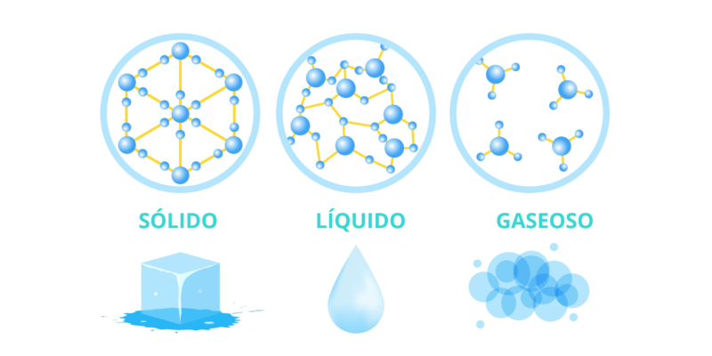
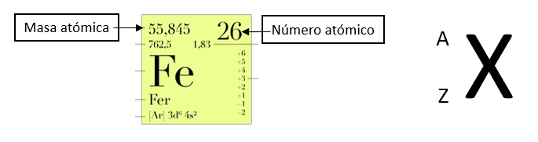
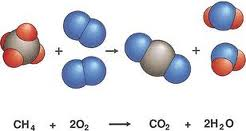

La materia es todo aquello que se extiende en cierta región del espacio-tiempo, que posee energía y está sujeto a cambios en el tiempo y a interacciones con instrumentos de medida.
a) Estado sólido:
Se caracteriza por tener forma y volumen definido, debido a que la fuerza de atracción intermolecular es mayor que la fuerza de repulsión.
b) Estado líquido:
Se caracteriza por tener volumen definido y forma variable según el recipiente que lo contenga, debido al equilibrio existente entre la fuerza de atracción y la de repulsión.
c) Estado gaseoso:
Estos carecen de forma y volumen definido, ya que la fuerza de repulsión intermolecular es mayor que la fuerza de atracción.

Son los procesos en los que un estado de la materia cambia a otro manteniendo una semejanza en su composición. A continuación se describen los diferentes cambios de estado o transformaciones de fase de la materia:
Fusión: Es el paso de un sólido al estado líquido por medio del calor; durante este proceso endotérmico (proceso que absorbe energía para llevarse a cabo este cambio) hay un punto en que la temperatura permanece constante. El “punto de fusión” es la temperatura a la cual el sólido se funde, por lo que su valor es particular para cada sustancia. Dichas moléculas se moverán en una forma independiente, transformándose en un líquido. Un ejemplo podría ser un hielo derritiéndose, pues pasa de estado sólido al líquido.
Solidificación: Es el paso de un líquido a sólido por medio del enfriamiento; el proceso es exotérmico. El “punto de solidificación” o de congelación es la temperatura a la cual el líquido se solidifica y permanece constante durante el cambio, y coincide con el punto de fusión si se realiza de forma lenta (reversible); su valor es también específico.
Vaporización y ebullición: Son los procesos físicos en los que un líquido pasa a estado gaseoso. Si se realiza cuando la temperatura de la totalidad del líquido iguala al punto de ebullición del líquido a esa presión continuar calentándose el líquido, éste absorbe el calor, pero sin aumentar la temperatura: el calor se emplea en la conversión del agua en estado líquido en agua en estado gaseoso, hasta que la totalidad de la masa pasa al estado gaseoso. En ese momento es posible aumentar la temperatura del gas.
Condensación: Se denomina condensación al cambio de estado de la materia que se pasa de forma gaseosa a forma líquida. Es el proceso inverso a la vaporización. Si se produce un paso de estado gaseoso a estado sólido de manera directa, el proceso es llamado sublimación inversa. Si se produce un paso del estado líquido a sólido se denomina solidificación.
Sublimación: Es el proceso que consiste en el cambio de estado de la materia sólida al estado gaseoso sin pasar por el estado líquido. Al proceso inverso se le denomina Sublimación inversa; es decir, el paso directo del estado gaseoso al estado sólido. Un ejemplo clásico de sustancia capaz de sublimarse es el hielo seco.
Estos dos conceptos engloban lo que son las magnitudes atómicas que definen a cada átomo.

La masa atómica puede ser considerada como la masa total de protones y neutrones (estos constituirían los denominados nucleones, partículas subatómicas que se encuentran en el núcleo). Los electrones no se tienen en cuenta pues que su masa es prácticamente despreciable. Un elemento puede presentarse en la naturaleza como isótopos diferentes… ¿eh? Un isótopo tiene el mismo número de protones, pero distinto número de neutrones, de ahí que su masa atómica (isotópica) sea diferente. Lo que conocemos por masa atómica de un elemento sería la media ponderada de las masas de los diferentes isótopos, en función de su presencia en la naturaleza.
El número atómico se representa con la letra Z, y puede considerarse el número de protones presentes en el núcleo.
Estas leyes son: la ley de conservación de la masa, la ley de las proporciones constantes o definidas y la ley de las proporciones múltiples. El establecimiento de estas tres leyes jugó un papel fundamental en el desarrollo de la teoría atómico-molecular de la materia.
Ley de conservación de la masa:
establece que la materia no se crea ni se destruye, sólo se transforma; de manera análoga, la Ley de conservación de la energía establece que la energía no se crea ni se destruye, sólo se transforma.
Ejemplo: cuando un hielo se derrite se convierte en agua con la misma cantidad de mas que el hielo.
Ley de las proporciones constantes o definidas:
Cuando los elementos se combinan para formar compuestos siempre es necesaria la misma proporción de masas de los constituyentes para hacer un compuesto en concreto.
Ejemplo: 23,0 g de sodio siempre se combinan con 35,5 g de cloro para producir 58,5 g de cloruro sódico (NaCl, sal común).
Ley de las proporciones múltiples:
“Cuando dos o más elementos pueden formar más de un compuesto, las cantidades de uno de ellos que se combinan con una cantidad fija del otro, guardan entre sí relación de números enteros sencillos”
Ejemplo: El agua tiene la formula química de H₂O, los indices de cada elemento siempre serán enteros y sencillos.

Óxidos Básicos:
Oxígeno + Metal = Óxido Básico
Ejemplo:
Ag+1 + O-2 → Ag2O